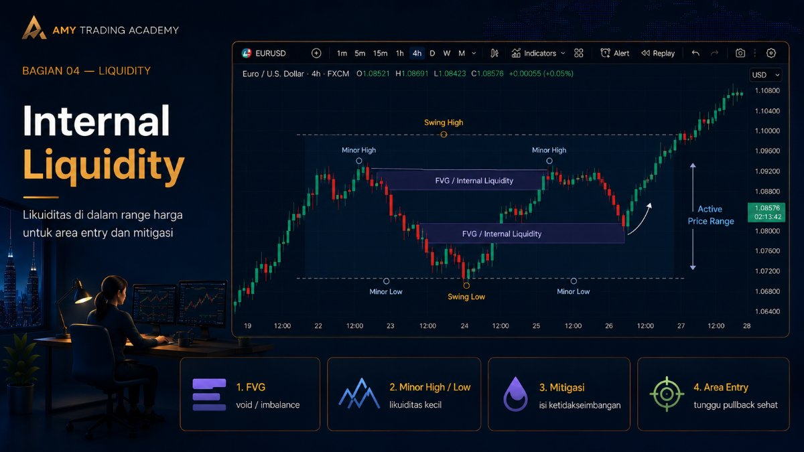
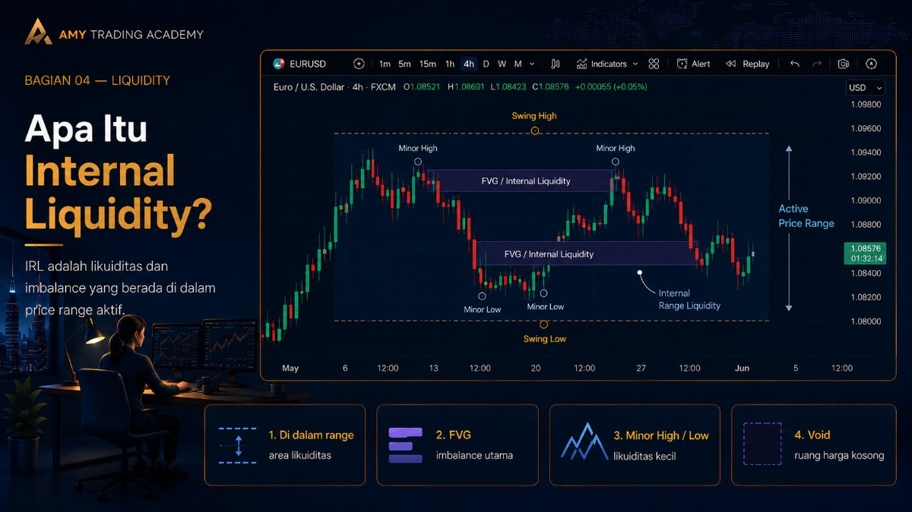
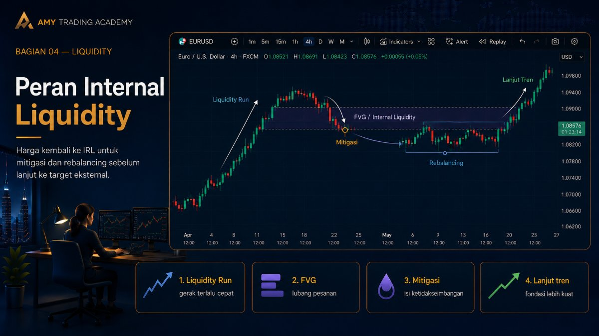
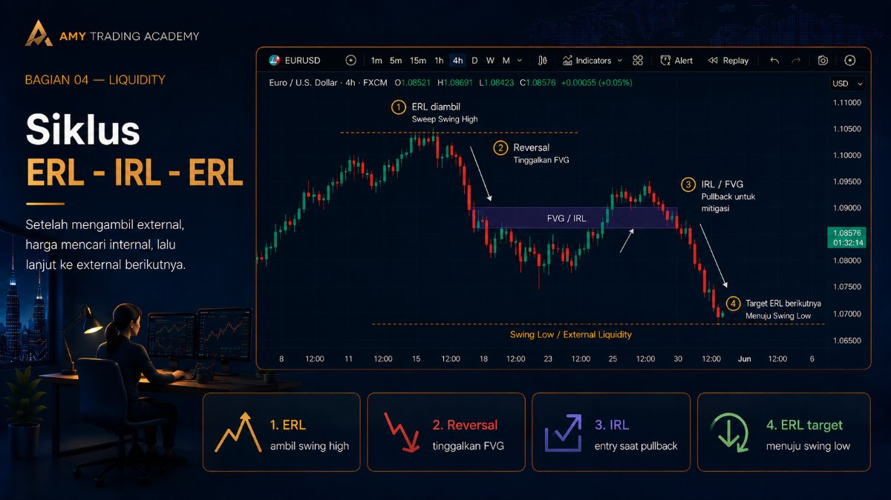
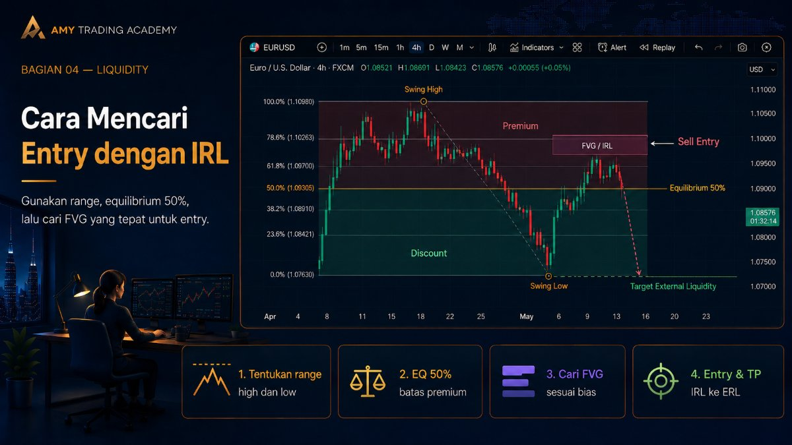

Internal Liquidity

Jika kita mengibaratkan pergerakan harga sebagai sebuah perjalanan melintasi kota, maka External Liquidity (Swing High dan Swing Low) adalah gerbang batas kota (ujung jalan). Lalu, apa yang ada di antara kedua gerbang batas tersebut? Di sanalah letak Internal Liquidity. Ini adalah "pom bensin" dan "rest area" yang harus disinggahi oleh harga untuk mengisi bahan bakar sebelum melanjutkan perjalanan ke ujung kota berikutnya.
Memahami Internal Liquidity adalah kunci utama untuk mengetahui di mana tepatnya kita harus melakukan entry. Tanpa konsep ini, kamu akan selalu kebingungan mencari titik masuk (entry point) setelah arah pasar terkonfirmasi.
Apa Itu Internal Liquidity?

Internal Range Liquidity (IRL) adalah semua bentuk likuiditas atau ketidakseimbangan (imbalance) yang bersemayam di dalam rentang harga (antara Swing High dan Swing Low utama). Berbeda dengan External Liquidity yang berupa tumpukan Stop Loss utuh, Internal Liquidity mayoritas berupa kekosongan pesanan (void/imbalance) yang ditinggalkan oleh pergerakan harga yang terlalu cepat.
Bentuk paling umum dan paling kuat dari Internal Liquidity adalah Fair Value Gap (FVG). Selain FVG, struktur-struktur kecil (minor highs dan minor lows) yang ada di dalam rentang harga besar juga berfungsi sebagai likuiditas internal jangka pendek yang sering disapu sebelum harga melanjutkan tren utama.
Peran Internal Liquidity dalam Algoritma

Algoritma harga (IPDA) diprogram untuk menjadi seefisien mungkin. Namun, saat institusi memasukkan pesanan besar (yang menyebabkan Liquidity Run), pergerakan harga menjadi terlalu cepat dan tidak seimbang, sehingga meninggalkan "lubang" (FVG) di chart. Lubang inilah yang disebut Internal Liquidity.
Peran utama Internal Liquidity adalah sebagai Area Mitigasi (Rebalancing). Algoritma akan menarik harga kembali (pullback) ke dalam "lubang" tersebut untuk menyeimbangkan kembali pesanan yang terlewat. Setelah seimbang (mitigated), barulah harga memiliki fondasi yang kuat untuk melesat lagi menembus External Liquidity.
Siklus ERL - IRL - ERL (Master Algoritma)

Sekarang mari kita gabungkan dengan bab sebelumnya. Inilah rahasia siklus pergerakan market yang berulang setiap hari, di setiap Time Frame:
- ERL (External Range Liquidity): Harga bergerak naik dan menyapu Swing High (mengambil External Liquidity).
- Reversal (Pembalikan): Setelah mengambil uang di atas, Smart Money membalikkan arah harga ke bawah dengan kuat (Liquidity Run), meninggalkan FVG (Internal Liquidity).
- IRL (Internal Range Liquidity): Harga pullback (naik sementara) ke dalam FVG tersebut. Di sinilah Smart Money melakukan mitigasi pesanan. (Ini adalah Titik Entry Kita!)
- ERL (Target Berikutnya): Setelah menyentuh IRL, harga akan meluncur turun dengan sangat kuat menuju Swing Low di bawah (menargetkan External Liquidity seberang sebagai Take Profit).
Mantra yang harus kamu ingat: "Setelah harga mengambil External Liquidity, ia akan mencari Internal Liquidity. Setelah berbalik dari Internal Liquidity, ia akan mencari External Liquidity."
Cara Mencari Entry Menggunakan IRL

Bagaimana cara praktis mengaplikasikannya di chart? Ikuti langkah-langkah ini:
- Tentukan Range: Tarik garis horizontal pada Swing High dan Swing Low yang baru saja terbentuk. (Ini adalah batas External-mu).
- Ukur Premium & Discount: Gunakan tool Fibonacci Retracement. Tarik dari High ke Low. Tandai level 50% (Equilibrium). Bagian atas adalah Premium (mahal), bagian bawah adalah Discount (murah).
- Cari FVG (IRL): Jika kamu ingin Sell (karena tren sedang turun), cari FVG yang letaknya berada di area Premium (di atas level 50%). Jangan Sell di FVG yang ada di area Discount. Begitu juga sebaliknya untuk Buy.
- Pasang Limit Order (atau tunggu konfirmasi LTF): Letakkan order Sell-mu di dalam kotak FVG (Internal Liquidity) tersebut, dan letakkan Take Profit-mu di Swing Low (External Liquidity).
Kesimpulan Modul Liquidity: Selamat! Kamu telah menyelesaikan salah satu modul paling penting di Amy FX Academy. Mulai sekarang, jangan melihat chart sebagai garis yang naik turun. Lihatlah chart sebagai sebuah Peta Likuiditas. Tanyakan pada dirimu sendiri: "Di mana letak uangnya? (External), dan di mana lubang yang harus diisi? (Internal)." Mengetahui ini berarti kamu sudah berpikir seperti institusi, bukan lagi seperti trader ritel yang kebingungan.